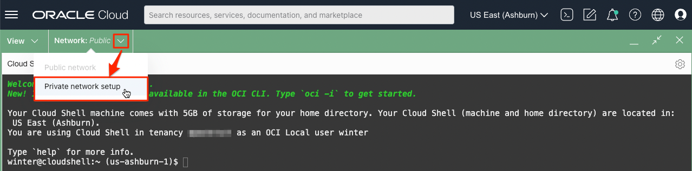
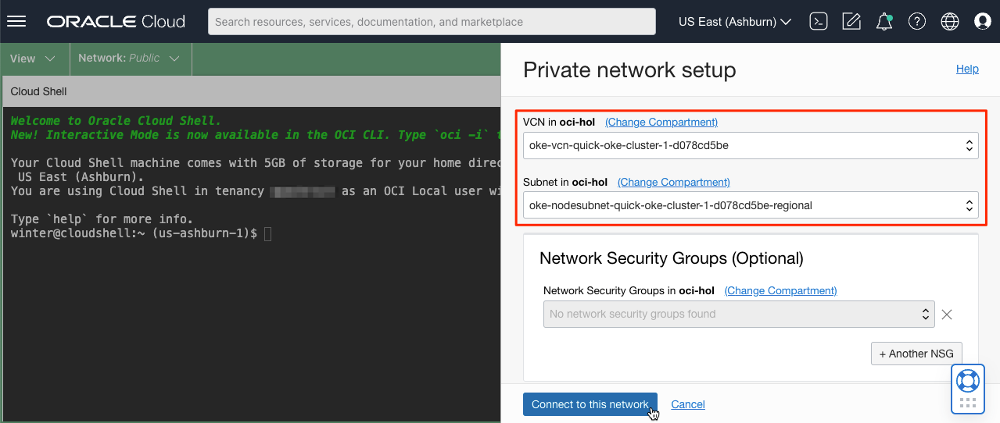
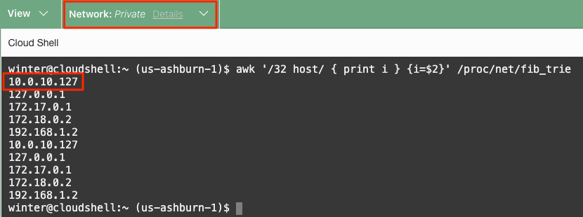
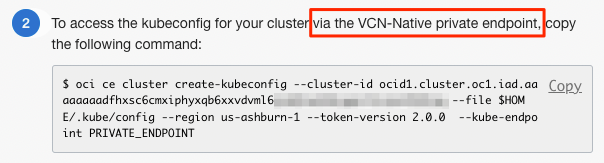
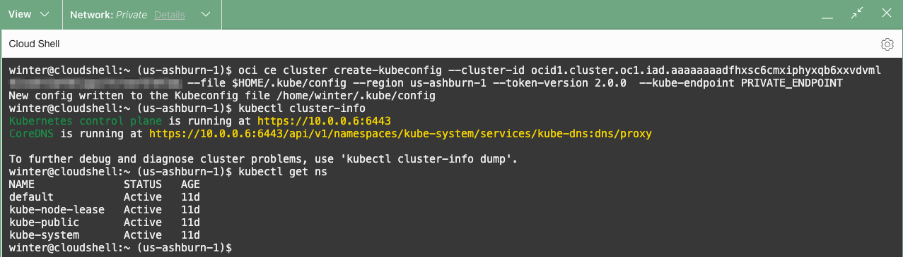
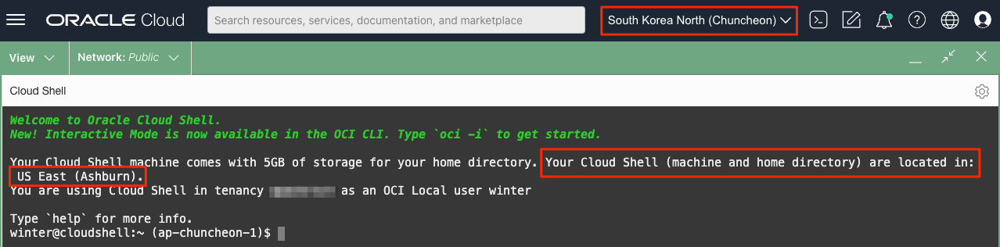

Cloud Shell now offers Private Access
- Release Notes - Cloud Shell now offers Private Access
- Blog - Securely access private resources from OCI Cloud Shell using private network access
업데이트 사항
Cloud Shell에서 Private Access 하기
OKE Private Cluster에 대해서 Cloud Shell의 Private Access를 통해 연결하는 예시입니다.
-
Cloud Shell에서 새로 생긴 Network 선택 메뉴에서 Private network setup을 선택합니다.

-
Cloud Shell에서 연결하려는 서브넷을 선택합니다.
K8S API Endpoint로 연결이 가능하는 Worker Node 서브넷을 선택합니다.

-
Private Network에 연결이 완료되고, 해당 서브넷의 IP를 추가로 할당받은 것을 확인할 수 있습니다.
-
ifconfig 없이 IP 확인하기
awk '/32 host/ { print i } {i=$2}' /proc/net/fib_trie

-
-
OKE Cluster의 PRIVATE ENDPOINT를 복사합니다.

-
Cloud Shell에서 OKE Private Cluster에 접속되는 것을 확인할 수 있습니다. Control Plane의 연결 IP가 Private IP 이지만 연결되어 명령이 수행되고 있습니다.

참고사항
아래 그림에서 보듯이 Cloud Shell은 실제 Home Region에서 구동되고 있습니다. 오라클 클라우드 콘솔에서 현재 Region을 다른 것으로 변경하더라도 Cloud Shell은 Home Region에서 구동됩니다. 그래서 Cloud Shell Private Access의 Private Network Setup 화면에서 조회되는 VCN과 Subnet은 Home Region에 있는 VCN과 Subnet입니다. 따라서 다른 Region의 자원에 접속하기 위해서는 Home Region에 있는 VCN과 대상 VCN을 Remote Peering을 설정하여, Home Region의 VCN을 통해 거쳐가야 합니다.

이 글은 개인으로서, 개인의 시간을 할애하여 작성된 글입니다. 글의 내용에 오류가 있을 수 있으며, 글 속의 의견은 개인적인 의견입니다.